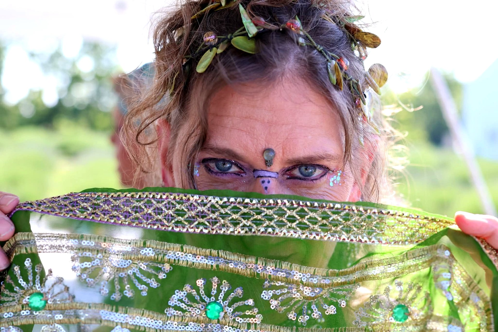
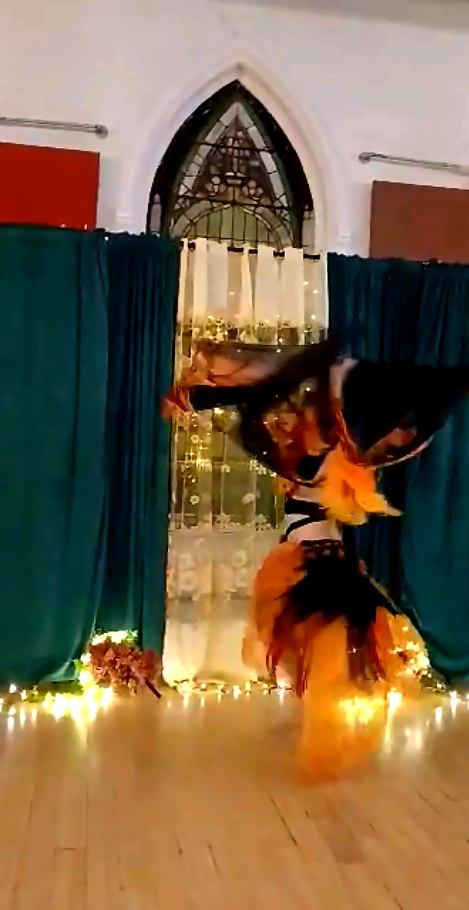
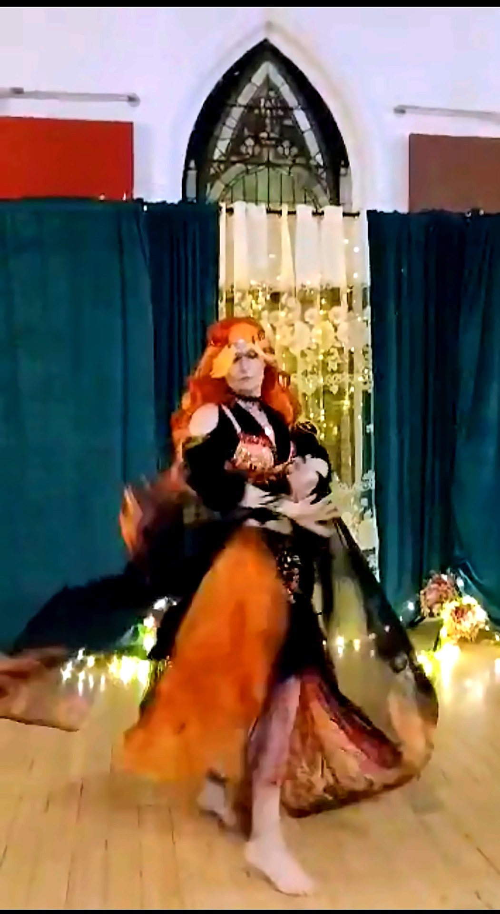
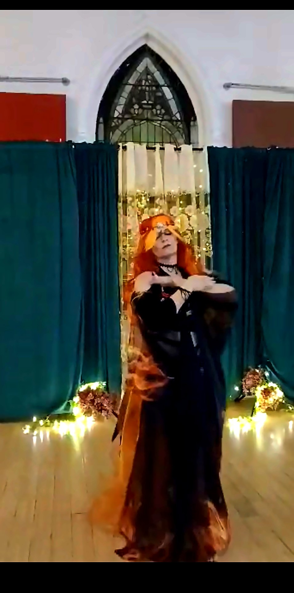
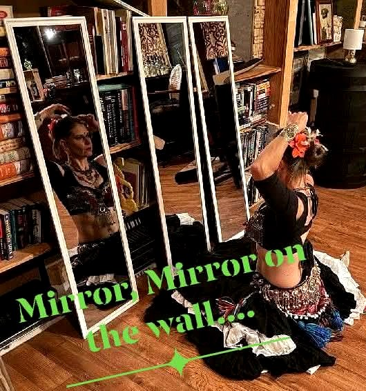
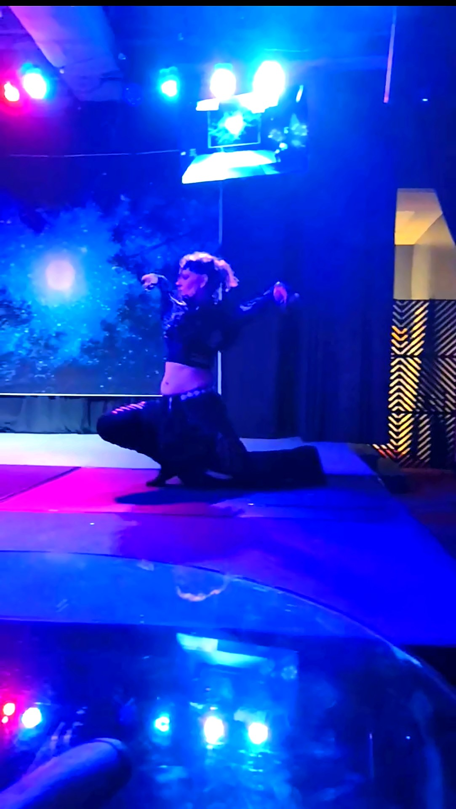

About Fiery Nights & Tribal Temptations
FN&TT is a fusion belly dance studio built on community, creativity, and a genuine love of the art form. Based in Northern Kentucky and open to everyone.
Meet Firestorm

Firestorm (Chris Rhodes) is the founder and director of Fiery Nights & Tribal Temptations Belly Dance — a fusion belly dancer, choreographer, and original curriculum developer based in Verona and Dry Ridge, Kentucky.
Trained in American Tribal Style and Tribal Fusion belly dance under Diana Humbert of Terpsichore Belly Dance in Erlanger, Kentucky, Firestorm continues her studies through online training with Lena Gukina of Moonlight Tribe and Rachel Brice of Datura Online — two of the most respected names in Tribal Fusion. Her self-directed studies draw from the foundational lineages of Fat Chance Belly Dance, Belly Dance Superstars, and Zoe Jakes, with ongoing guidance and mentorship from several experienced instructors in the field.
Teaching from her own uniquely developed Firestorm Method curriculum, she brings both technical skill and genuine passion to every class, workshop, and performance — creating experiences that stay with you long after the music stops.
Firestorm in Performance



Our Story

Fiery Nights & Tribal Temptations Belly Dance was created as a home for dancers who want more than just steps — a place for real expression, real connection, and real growth.
FN&TT blends fusion belly dance technique, theatrical expression, and the full tradition of belly dance props — including fire — into a style that's entirely its own. Our classes and events are designed to be welcoming to everyone — whether you're brand new to dance or a seasoned performer looking for your next challenge.
We believe dance is one of the most powerful things a person can do. It builds confidence, community, and a sense of self that goes far beyond the studio. That's what Fiery Nights & Tribal Temptations is all about.
What FN&TT Stands For
Community: A supportive, inclusive space where every dancer belongs and everyone lifts each other up.
Creativity: Fusion dance is about innovation and personal expression — there's no single right way to do it.
Safety: Especially with fire props, safety is always the top priority — no exceptions.
Intention: We dance with purpose. Every class, every performance, every event is created with care and meaning.
What Fiery Nights & Tribal Temptations Offers
FN&TT offers belly dance classes for all levels, private lessons, workshops, a structured fire program, and community events — based at Schoolyard Winery in Verona, Kentucky, serving all of Northern Kentucky.
Explore Classes
We also produce markets, haflas, showcases, and themed performance events that bring together dancers, artists, vendors, and community members from across the region.
View EventsJoin the FN&TT Community
Ready to become an official member of the Fiery Nights & Tribal Temptations community? Fill out the form below — you'll be the first to hear about new classes, events, workshops, and FN&TT news!